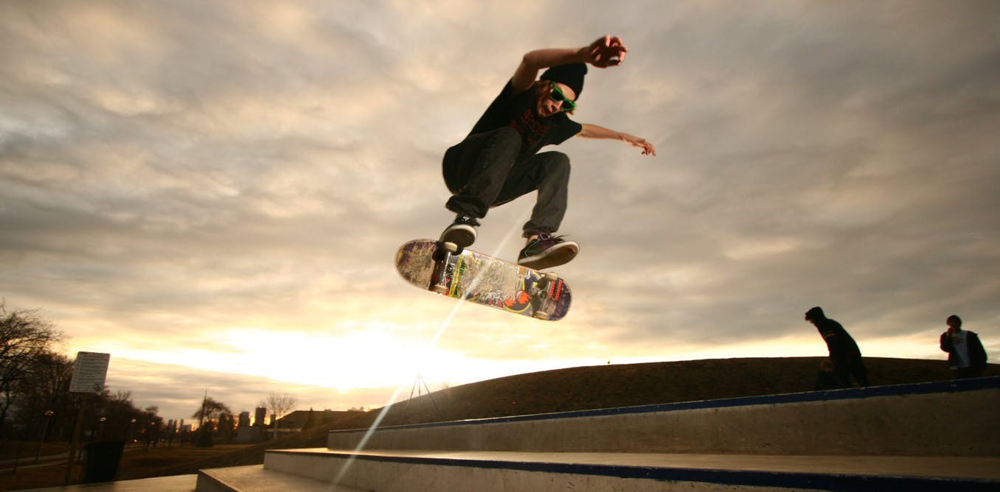

|

|
Skateboarding
Skate, também denominado no Brasil por esqueitismo, ou esqueite é um esporte que consiste em deslizar sobre o solo e obstáculos equilibrando-se numa prancha, chamada também de esqueite ou skate, dotada de quatro pequenas rodas e dois eixos chamados de trucks. Com a prancha de esqueite, executam-se manobras de baixos a altos graus de dificuldade.
|